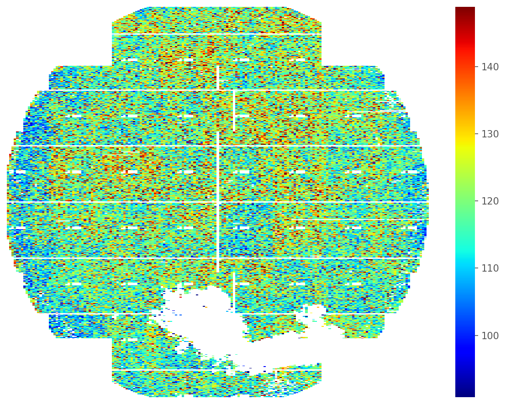
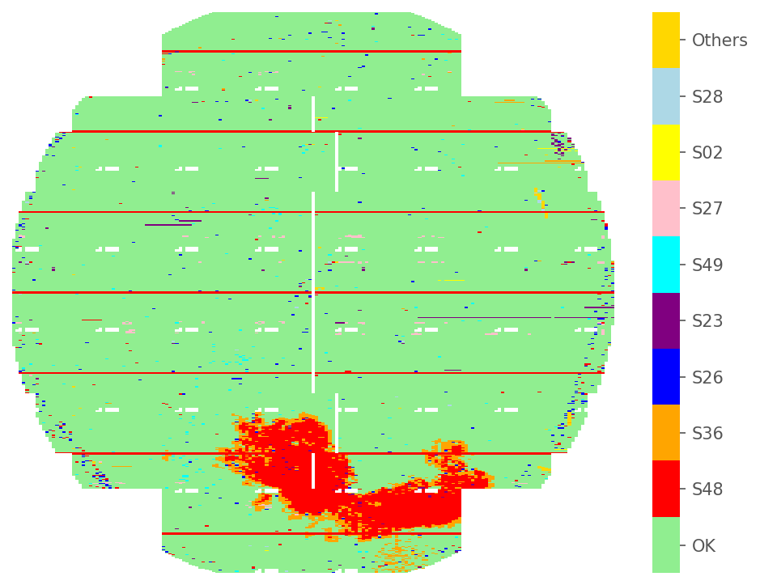
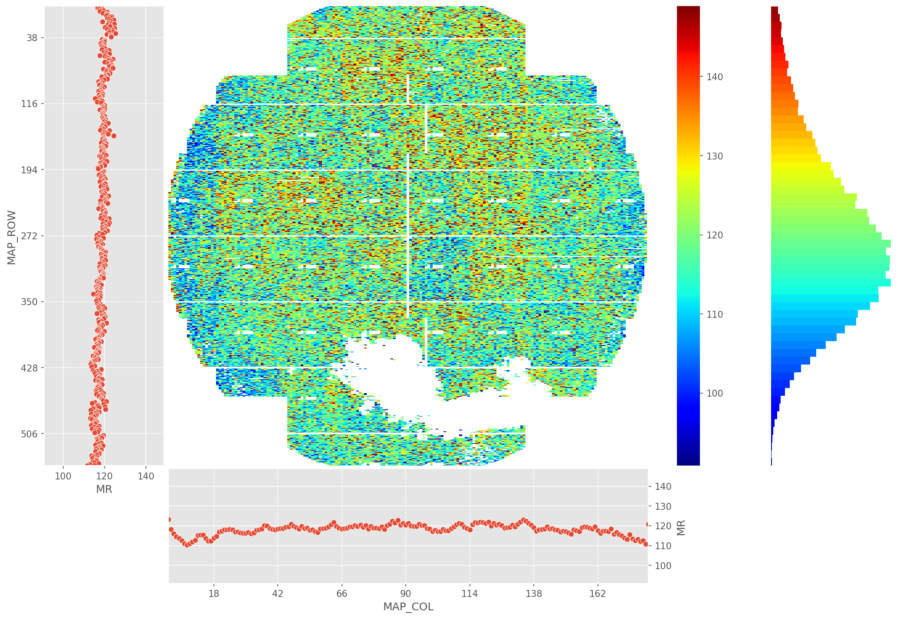
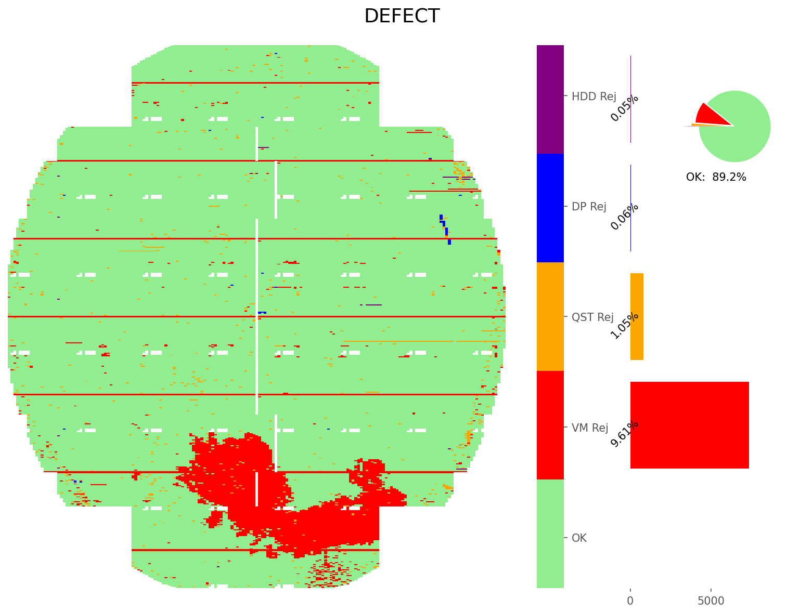
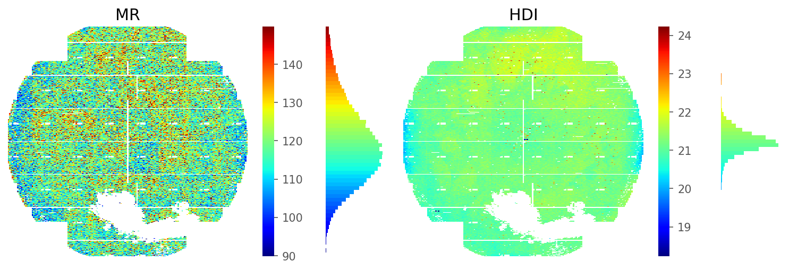
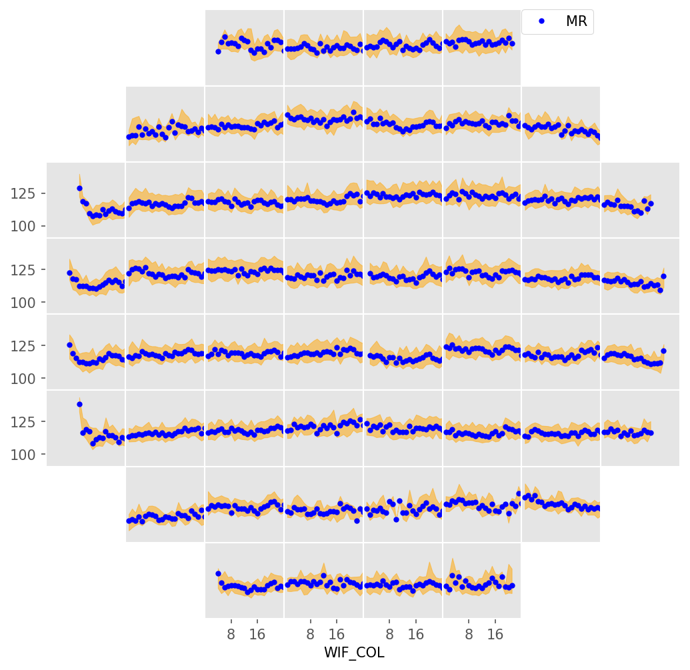
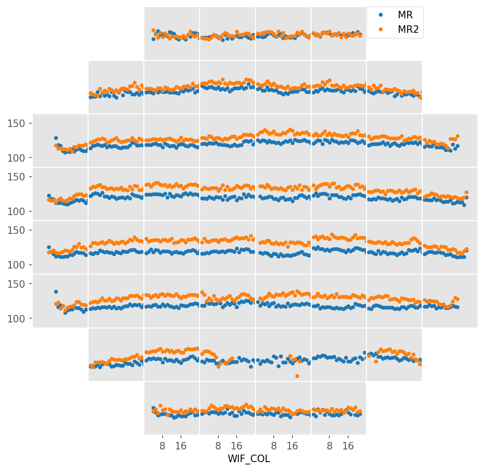
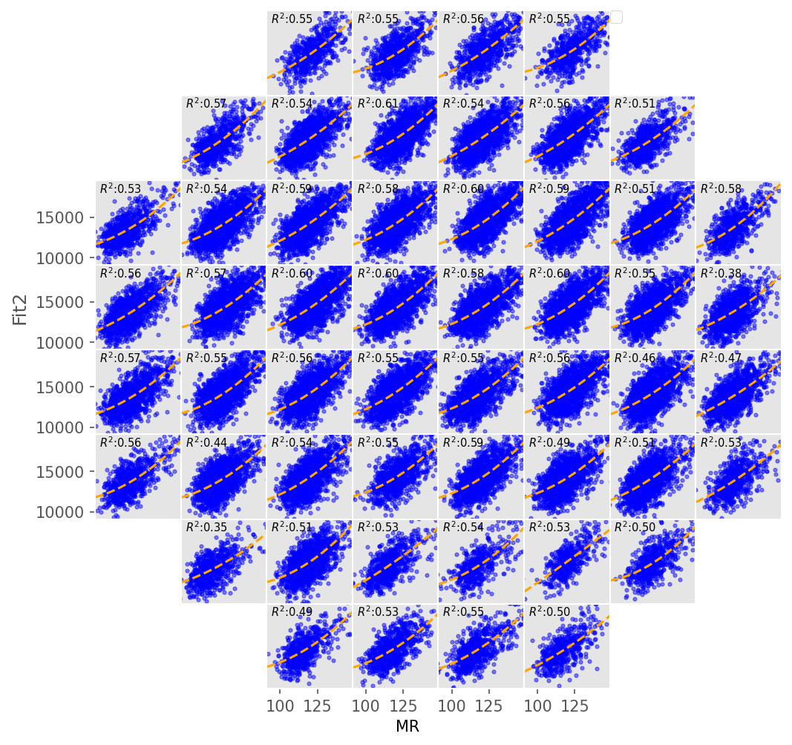

Automated Defect Classification
Upload up to 20 wafer map images for batch AI analysis, Grad-CAM localization, and yield risk assessment.
Single Defect (811K)
Multi-Defect (MixedWM38)
Drag & Drop Wafer Maps
Supports .png, .jpg — up to 20 images at once
Analysis History
Browse previously saved analysis sessions. All data is stored locally in your browser.
About WaferMap AI
This system utilizes an EfficientNet-B0 computer vision model trained on the WM-811K dataset to automatically classify semiconductor wafer maps into 9 distinct defect categories.
Core Technologies
- FastAPI Backend: Handles inference routing and tensor manipulation gracefully on local edge devices.
- PyTorch & Transfer Learning: Employs a tailored EfficientNet-B0 backbone adapted specifically for the Wafer topology.
- Grad-CAM: Utilizes Gradient-weighted Class Activation Mapping to demonstrate where the model is looking.
- Ngrok Tunnels: Proxies local edge-device compute safely to the production cloud UI.
Test with Real Dataset Samples
Click on any WM-811K sample below to load it into the Dashboard.
Exploratory Data Analysis
Dynamic visualizations of the WM-811K wafer manufacturing dataset.
Numerical Heatmap

Categorical Heatmap

Raw WaferMap Viewer

Defect Map Profiler

Inc Map Tracker

WIF Trend Analyzer

Macro WIF Trends

Twin Trends Modeling
WIF Correlation Plot
